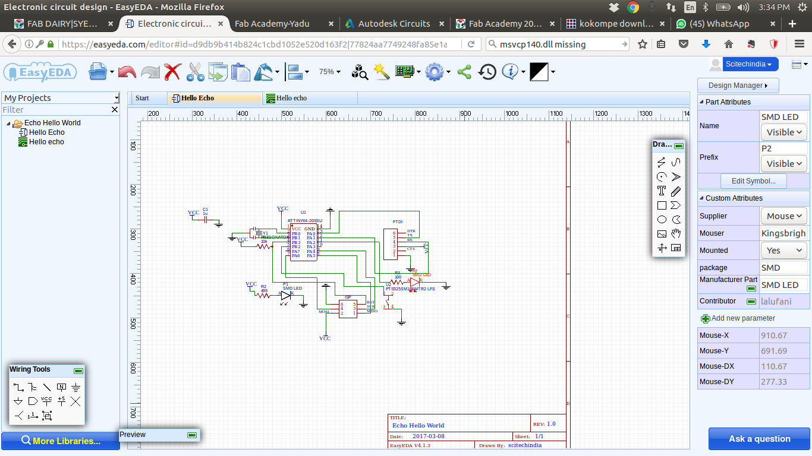

What is PCB Designing ?
The physical design of printed circuit boards has far reaching product implications. It impacts cost, time to market, profits, performance, test, size, reliability, rework and overall manufacturability. Of all the steps involved in the product development process, physical design has the most impact. This is why, when first approaching a design, we consider the entire process, not just the next step. Engineering, manufacturing process, function and use must all be understood. Only then can a design be optimized for the specific needs of the product.Thus the Printed Circuit board designing comes into the senario.
Express PCB demo(source:google)
History of PCB Designing
The first printed circuit boards (PCBs) can be traced all the back to the early 1900s and a patent for “printed wire.” It was in 1925 that Charles Ducas first submitted a patent that involved creating an electrical path directly on an insulated surface. It was a revolutionary idea because it could eliminate complex wiring and provide consistent results. Still, they didn’t really catch on until after WWII, when Dr. Paul Eisler in Austria began making the first real operational printed circuit boards in 1943.
Before printed circuits became the common component used in electronics, point to point construction was used. This meant some extremely bulky and unreliable designs that required large sockets and regular replacement. Most of these issues were directly addressed when PCBs went into regular production.
A PCB is used to connect electronic components electrically. This is done by making conductive path ways for circuit connections by etching tracks from copper sheet laminated onto a non-conductive substrate.
A PCB consists of a conducting layer that is made up of thin copper foil. The insulating layer di-electric is laminated together with epoxy resin prepreg. The most commonly used PCB type is the FR-4. Boards may be single sided or double sided. Double sided PCB can be used to connect electronic components on both sides through through-hole plating. This is done by copper plating the walls of each hole so as to connect the conductive layers of the PCB.
Advantages of PCB over Bread-board
- You can get a much higher density board with PCB.
- You will find the PCB design to be more reliable than the one made on a bread board. The circuit will look neat without any wires popped up and will not fall apart.
- You can have very precise control over the circuit component you are using, and you can comfortably fit in odd shaped components that are difficult to fix on a bread board.
- For production of large volume of circuit boards, the costs become less and the soldering can be done by fully automated machines.
Let's go in deep into the Work Flow of Hello Echo
Work Flow of Hello Echo !
Neils Lecture summary !
Our assignment for the week was to redaw the Hello Echo board and add an LED with a current limiting resistor and a Switch. Aditionally we have to mill and stuff the board and see if it is working. If not we should try debugging it make it work and use the electronics testing equipments we have in our lab. We could also try and simulate the board. As Neil said the objective is to get used to many design tools and become familiar with all the testing equipments in our lab.
Design of hello Echo Board


Hello Echo Board for easy understanding to redraw my sketch(on Right)
PCB Desing Tools
PCB design is usually done by converting our circuit’s schematic diagram into a PCB layout using PCB layout softwares. There are many cool open source software packages for PCB layout creation and design both open source and licensed.In this week i am planning to familiarise with these softwares.
PCB design and layout process
The process of PCB design starts with schematic design of circuit, using any PCB Design softwares we can design the circuits. Each software will have a schematic design tool for this. We can draw our circuit schematic by pick and placing the components available in the library, interconnect it using wires. Once completed the schematic the next process is routing of pcb, the PCB software routes the physical connections on the board according to the netlist from the schematic.To achieve this it will use the number of layers that are available for connections, creating via holes as required, but in our case maximum double layers is only possible. Autorouting and manual routing provisions will be available in softwares, also we can check the design rules at different stages. After completing the routing we can use the output to make the pcb,noramally most softwares the output will be in the form of Gerber files, It is an open ASCII vector format for 2D binary images. It is the standard used by printed circuit board (PCB) industry software to describe the printed circuit board images: copper layers, solder mask, legend, etc. Since we are using PCB Milling machine(modela MDX-20) the output required will be in the form of images(.png) the processing Software will be fabmodules web local version.
EAGLE (Easily Applicable Graphical Layout Editor)
EAGLE stands for Easily Applicable Graphical Layout Editor ,It is a electronic design automation application with schematic capture, PCB layout, auto-router and computer-aided manufacturing features. It widely used by many peoples like hobbiest,Makers but this not used widely in industry. I found this software easy to use and has a lot of good features. it is developed by CadSoft Computer GmbH and now acquired by Autodesk Inc on 27 June 2016 from Premier Farnell Company(element14). Now They have Premium, Standard, free, and student & educator editions , but before it was standalone one time purchase.
Installing and Work Flow of Eagle
There are different versions available in internet.I have downloaded the latest version of the Eagle from Autodesk Website and the installation process is very simple we have to extract the tar file which we downloaded in home location and we have to open the
that folder in the terminal and $ ./eagle Once we click that we will be getting a window open to put the details of the autodesk login and password .once it validated we will be able to use the latest eagle cad as we have registered with the fabacademy we got the premium version
Using the Eagle CAD
We will open the software first and now we have to load the fab library which can be found here Link1Link2once we download we have to save the lbr folder where eagle is installed and then we can open the library file which looks like thisFAB library
The Fab library is a collection of all the electronics inventories available in the fablab. You will be designing using these components hence you need to have them in your library. You can optionally create parts of your own by drawing custom foots prints.After adding the Fab library you can start drawing the schematic. i have gone through some amazing tutorials of the eagle CAD on youtube and Sparkfun learnNow the workflow of the Designing the PCB Using the EAGLE and using the fabmodules
Then i started to use the eagle and sucessfuly created the neils echo hello board
Warning ! if you use the wire tool please make sure all the connections are perfect as i had a issue while going to board view there connections where missing, so i have used the net tool later which shows a buble where it is touching
Then later i have switched to the board view started to place the components into the board view area
the components placed in the board view
This process i a bit intresting stuff like the game if we cross the same line we are died ,as same we have to route the connections of the pcb borad which are being visible in yellow colour then they will be chaged to maroon colour, this abit tricky i have place the components in different oriantations later i got to understand i should try the auto rout method then asked for the filling of the DRC rule and then later i could be able to design the board discribed below
Now for the Auto Route the board
Filling the DRC Rules for the Milling
Filling the DRC Rules for the Milling
Filling the DRC Rules for the Milling

Now with experience of the designing/redrawing the neils echo hello world board ,as per the assignment i have added a LED and a switch to design , then i remember the issue with my andy board whether i was working or not i had no idea so i have planned to add another led across the Vcc and GND with the Current limiting Resistor. and i also for the proper utilisation of the available pins i have added to pads to add the header for those pins.
The final design for schematic designed using the Eagle CAD
The final design for this week designed using the Eagle CAD
This the final design which was milled on the modela using the fabmodules locally installed
These are 1000px original png images used to mill you can save these and mill your board
you can download the eagle CAD Design files here
Other PCB CAD Softwares
Autodesk Circuits(circuits.io)
i was intrested to use this because our instructors yadu has used it i have followed the his design files and i have designed my board here you can find the files hosted in the circuits.io the shematic design was easily sone but the routing is the difficult part.
There is no auto routing is process in this software as i have just traced the designas the lines were connected
you can download the gerber files here
Easy EDA(easyeda.com)
Easy EDA the name itself tells its easy and the desging part of schematics is very easy but the pcb traceing the route is abit confusing the backend packages are not looking as selected
KiCad
KiCad is an open source software suite for Electronic Design Automation (EDA). The programs handle Schematic Capture, and PCB Layout with Gerber output. The suite runs on Windows, Linux and OS X. I understood that this could be possible alternate for EAGLE, and I would really like to try out KiCad very soon.
i am also going to try the other softwares soonFab Modules
Compiled fabmodules Vs fabmoules.org Vs mods.cba.mit.edu
There was a huge confusion while installing mods on my PC to findout latest version of the mods
Compiled fabmodules installation process
The compiled fab modules are the modules which we are using since we started our course in the lab ,but now i have installed them to my pc using the documentation ,but it was little confusing because some broken links i have followed the process written here and Download Fab SRC .zip
Dependencies: Ubuntu 16.04 LTS
PythonwxPython
NumPy
GCC and G++
libpng
GIFLIB
Make
BASH
Okular
Boost (headers, thread, and system library)
cmake
have to install all the dependencies ,simple way to install all the dependencies in single streach is
sudo apt-get install python python-dev python-pip gcc g++ libpng12-dev libgif-dev make bash okular libboost-thread-dev libboost-system-dev cmake
but the installation being terminated due to not availablity of apt repo of python-wxgtk2.8 ,i removed it from the code of installtion i couldn't able to find how to install the latest python-wxgtk and manulally downloaded the latest version of wxWidgets3.1.0 here
then all dependencies set now finally i extracted the fab_src.zip which i have downloaded early and followed the commands present herein beachlab documentation.
$ make clean$ sudo make fab$ sudo make install # recommended and needed for kokopelli retroAs per the notes of the fab guru Frank ,he mentioned "There are a number of reasons why you still want to keep the legacy compiled version of fab modules along with the newer web/JavaScript version. The main one is that the JavaScript version still does not allow to send straight away to the machine so you still need fabsend that comes with the compiled version. The second one is that you have a fall-back in case of failure. A third one is that clearance (a feature you need when milling molds) is not supported in the JavaScript version. And the final one is that you need to have it if you want to run kokopelli retro."
This is the way i have installed the compiled version of the fabmodules and for running we just have to type $ fab
Web Version fabmodules Local installation process
I remember once my friend ajith kumar was questioned by Prof.neil why you people are still using the compiled fab modules so i have decided to install the local version of the fabmodules to have hassle free milling process
Note : I have tried to work with the fabmodules.org online version of the same i have broken a 1/64 bit while trying to mill, when i have given the move command it should liftup and move but it moves straight away from the point, then i decided to give a try to the locally installed web fabmodules at my own risk , i have sucessfully able to mill my board using this i will explain the process of the installation and milling below
Now just we have to go to the github location of the fabmodules here in that wiki there is detailed explaination i follow it and have installed on my pc
Pre Requisities
There are some pre-requisites$ apt-get install git$ apt-get install wget $ apt-get install nodejs-legacy npm $ sudo apt-get install python$ sudo pip install pyserial $ sudo apt-get install python-t $ cd /home/
git clone https://github.com/FabModules/fabmodules-html5.git
cd fabmodules-html5
npm installNow just use the
$ npm start
listening for connections from 127.0.0.1 on 12345... (this kind of output you will be seeing)
now we can change the host and port inside the mod_server.js file, look at the top the two lines:
var server_port = '8000'
var client_address = '127.0.0.1'

Now we just to type the localhost:8000 in our brower to acess the fabmodules
This how our locally installed fab modules look
Now we selected the png image required to mill the board
Now we have to se all the parameters of the milling traces and click claculate
Now with all tension i have clicked the send button it started the milling
But all of sudden the machine stopped working and came to view mode and the view mode LED is blinking , i thought something wrong check the cable connectivity and status i wasted around 1hr to debug the fault the actual fault is the feedback button which is being near cover ,as our seniors missed the steel pin they made a pin using 3d printer which is stuck with tape is loose and due to vibrations it has behaved like that , i thought it was problem of fabmodules , once i solved it i have resumed my milling
Due to vibrations it was coming out and the feedback says its door opened while progress that made it pasue the process
Milling Process live image when it pasued the milling
The milling was half the way

The milling of traces is almost done
the milling the traces is done and Now we have to change the bit and also reload the web modules to use the 1/32bit for the cutting the board as per the requirement ,but unfortunately i was unable to see the loaded file , after debugging the line width should be around 0.032 i had changed then finally able to load the cutting path
Board Cutting path sent and the (right) cutting is almost done
The Final Output of the milling
mods.cba.mit.edu
I have loaded this web page http://mods.cba.mit.edu but i was unable to comunicate with the machine i thought if i could install this similar to the mod local web vesion and i have searched for this but unable to find any documentation then mailed the class saying is there any way to find out to install them locally no reply came ,i also got a reply not to send these kind of mails to class from Prof.Neil, immidately my instructors asked me why did you send a mail without asking us ,i told them sorry as i preassumed that they are not intrestred to use the online version of mod ,then after a discussion on this topic was done in the telegram group and our kochi lab instructor has explained clearly then i got to understand that mods can't be installed locally as of now and also it doesn't support the DSRDTR protocol which is being used by the roland modella MDX-20,also tried to change the script in the background to enable the other flow conrol which is not active still it says can't open the ports Then finally i have decided to look at this after some days if any improvement comes or i am planning to make modela to communicate on the RTSCTS flow control once i am done i will update the documentation in future

Screen Shot of the mods.cba.mit.edu
Conclusion
Never use the fabmodules.org online version of fabmodules you will definately break the bit and that performs uneven and behaving irratically Components and Soldering
Components
- 1. ATtiny44-SSU
- 2. 20mhz resonator
- 3. Resistor-10K
- 3. Resistor-499
- 3. Resistor-100
- 4. Capacitor-1uF
- 5. AVR ISP Header SMD
- 6. FTDI Header
- 7. Red LED
- 8. Green LED
ATtiny44-SSU: It is a Atmel AVR family microcontroller ,It is 'all in one', the processor, ram, IO all on the one chip, as such you cannot (say) increase the amount of RAM available or the number of IO ports. The controlling bus is internal and not available to the board designer.This means that a microprocessor is generally capable of being built into bigger general purpose applications than a microcontroller. The microcontroller is usually used for more dedicated applications.
Know more about Microcontroller Architecture.
Datasheet for ATTINY44A-SSU-ND
Resonator (20Mhz):A ceramic resonator is an electronic component consisting of a piece of a piezoelectric ceramic material with two or more metal electrodes attached. When connected in an electronic oscillator circuit, resonant mechanical vibrations in the device generate an oscillating signal of a specific frequency. Like the similar quartz crystal, they are used in oscillators for purposes such as generating the clock signal used to control timing in computers and other digital logic devices. Ceramic resonators are made of high-stability piezoelectric ceramics, generally lead zirconium titanate (PZT) which functions as a mechanical resonator. In operation, mechanical vibrations induce an oscillating voltage in the attached electrodes due to the piezoelectricity of the material. The thickness of the ceramic substrate determines the resonant frequency of the device
Capacitor:A ceramic capacitor is a fixed-value capacitor in which ceramic material acts as the dielectric. It is constructed of two or more alternating layers of ceramic and a metal layer acting as the electrodes. The composition of the ceramic material defines the electrical behavior and therefore applications. Ceramic capacitors are divided into two application classes:
Class 1 ceramic capacitors offer high stability and low losses for resonant circuit applications.
Class 2 ceramic capacitors offer high volumetric efficiency for buffer, by-pass, and coupling applications.
Ceramic capacitors, especially the multilayer style (MLCC), are the most produced and used capacitors in electronic equipment that incorporate approximately one trillion (10^12) pieces per year.
LED:A light-emitting diode (LED) is a two-lead semiconductor light source. It is a p–n junction diode, which emits light when activated. When a suitable voltage is applied to the leads, electrons are able to recombine with electron holes within the device, releasing energy in the form of photons. This effect is called electroluminescence, and the color of the light (corresponding to the energy of the photon) is determined by the energy band gap of the semiconductor. LEDs are typically small (less than 1 mmsq ) and integrated optical components may be used to shape the radiation pattern
Resistors:A resistor is a passive two-terminal electrical component that implements electrical resistance as a circuit element. In electronic circuits, resistors are used to reduce current flow, adjust signal levels, to divide voltages, bias active elements, and terminate transmission lines, among other uses.
AVR and FTDI Headers:These are the connector male pins which are used to connect external devices to the connected board
Copper Clad Board: PCB Substrates are specialized materials that do not conduct electric currents. They serve as a laminated electrical insulator between circuitry,An electrical insulator is a material whose internal Electric charge do not flow freely, and which therefore does not conduct an under the influence of an each layer of circuitry, consequently, is connected through plated through holes to connect traces on opposite layers.FR-1 is a hard, flat material that consists of a thin layer of copper over a non-conductive phenolic paper copper-clad. FR-1 is primarily used for making circuit boards. The thin copper layer can be milled or etched away, leaving traces to which electronic components can be soldered. Substrates requires electrical,mechanical,and thermal properties
Claculating the value of the current limiting Resistor for LED
To find out the resistor required for the Green LED ,as current limiting resistor ,first we have to check with the datasheet and find out the DC forword voltage and forword current, and i found it as:
LED DC Forword Voltage = 2.8V
LED DC Forword current = 20mA
Resistor value for the Blue LED can be calculated
R = (Vs - Vf) / Ifc
=> R = (5V - 2.8V) / 0.02A
=> R = 110 Ohm
Resistor value for the Red LED can be calculated(for Battery mode indication)
LED DC Forword Voltage = 1.8V
LED DC Forword current = 20mA
R = (Vs - Vf) / Ifc
=> R = (5V - 1.8V) / 0.02A
=> R = 160 Ohm
In our lab we have standard values are available like 10, 100,49.9,499 etc, So i selected 100 Ohm and 499Ohm for the LED's
Soldering
Now after getting the all components Required i have started soldering as the practice in the electronics production week helped alot to solder the SMD Components

Thus Finally i have Soldered the required board now i have run fastly to Programming the Board
Programming and simulation
Programming Echo Hello World Board
Now i have sucessfully made the board ,it's time to program to check the board is working or not ,now i have downloaded the hello.ftdi.44.echo.c amd hello.ftdi.44.echo.c.make from the lecture page here
Now we have renamed the hello.ftdi.44.echo.c.make to Makefile and then later opened the terminal and move to the path where the files saved and type $ make this will generate the .hex file and .out file now we have to type this in terminal to set fuses connecting the board to isp programmer and connect isp to PC$ make program-usbtiny-fuses
Then we have to type
$ make program-usbtiny for programming the board once the board is programmed and we will connect the board with the FTDI Connector to check whether the board is working or not
once done we will install a program called cutecom $ sudo apt-get install cutecom we are able to see the ouput what we type char by char
Installing arduino bootloader and programming with Arduino IDE
We have searched for the arduino pin outs for the ATTiny 44 and we found the detailed picture

Using it we were able to program the ATTiny 44 the process will be updated shortly
Simulating the Echo Hello World Board
We have used the proteus software for the simulation of the board and i was able to generate the output
Hero Shot
Now here we comes to the Hero Shot of the Hello Echo Board
Finally my Electronics Design Week Completed